Креирано 2025-11-23 Sun 16:21, притисни ESC за мапу, Ctrl+Shift+F за претрагу, "?" за помоћ
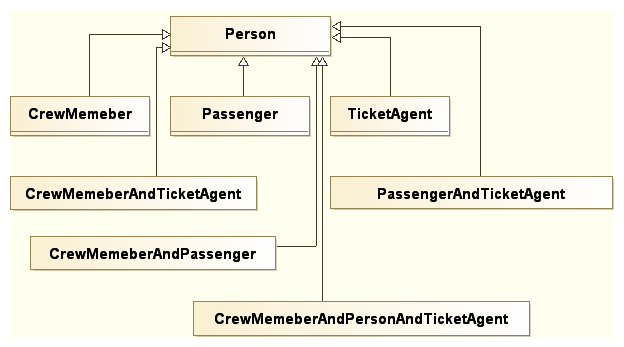
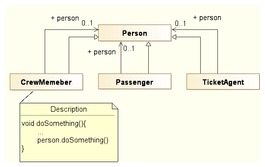
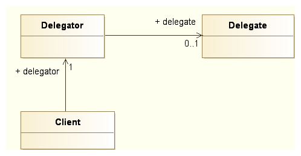
interface I {
void f();
void g();
}
class A implements I {
public void f() { System.out.println("A: doing f()"); }
public void g() { System.out.println("A: doing g()"); }
}
class B implements I {
public void f() { System.out.println("B: doing f()"); }
public void g() { System.out.println("B: doing g()"); }
}
class C implements I {
// delegation
I i = new A();
public void f() { i.f(); }
public void g() { i.g(); }
}
// normal attributes
public void toA() { i = new A(); }
public void toB() { i = new B(); }
public class Main {
public static void main(String[] args) {
C c = new C();
c.f();
// output: A: doing f()
c.g();
// output: A: doing g()
c.toB();
c.f();
// output: B: doing f()
c.g();
// output: B: doing g()
}
}
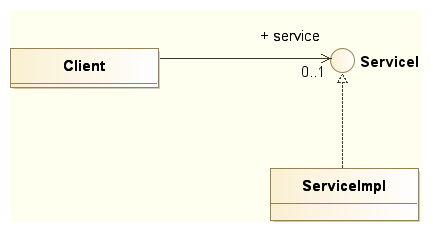
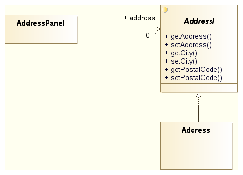
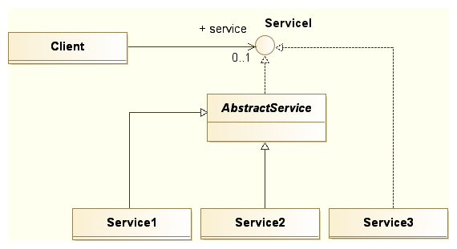
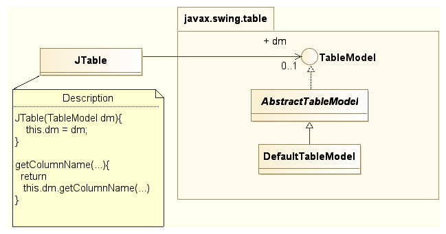
Базичне особине креационих образаца су следеће:
Према [1] креациони обрасци су следећи:
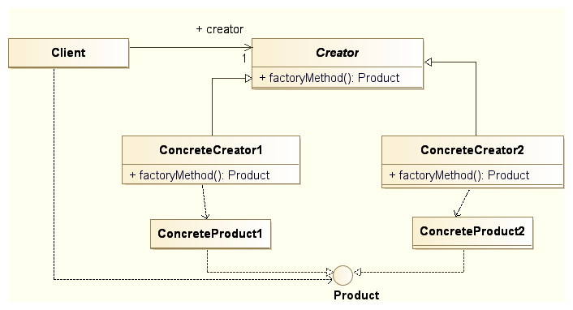
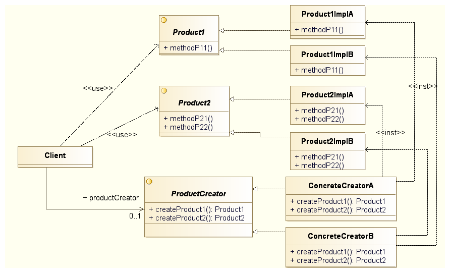
Креирање објекта копирањем већ постојеће инстанце.
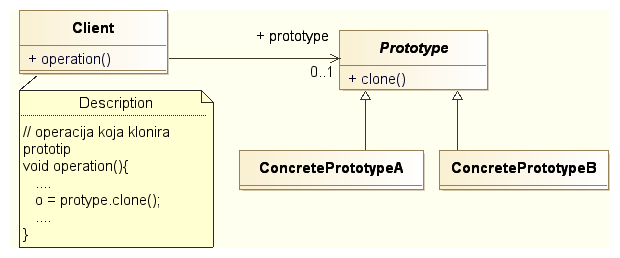
clone операција је реализована као "плитко копирање" (енг. shallow
copy).Конструкција сложених објеката поделом надлежности на онога ко "зна" како треба направити структуру сложеног објекта и онога ко "зна" како треба креирати појединачне делове.
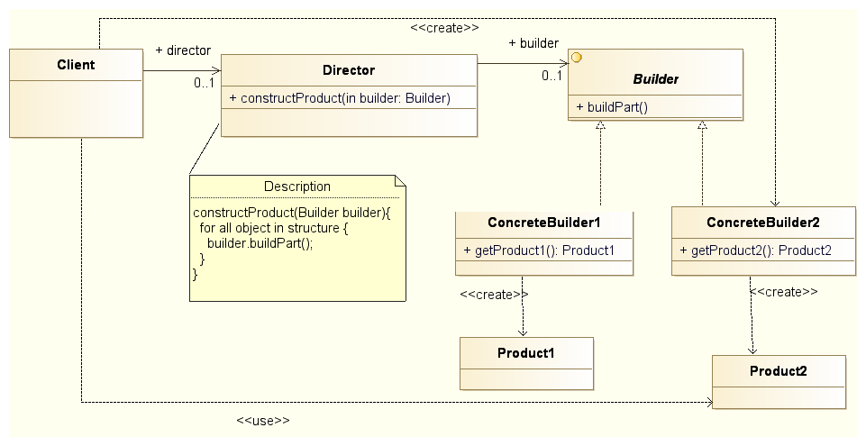
Раздвајамо конструкцију сложеног објекта (најчешће Composite) од његове репрезентације тако да исти поступак изградње може резултовати различитим репрезентацијама.
Постоји и друга врста Builder обрасца где се објекат гради у корацима употребом помоћног Builder објекта.
Пример у Јави:
public class Car {
private String make;
private String model;
private int year;
private String color;
private int horsepower;
private Car(Builder builder) {
this.make = builder.make;
this.model = builder.model;
this.year = builder.year;
this.color = builder.color;
this.horsepower = builder.horsepower;
}
public static class Builder {
private String make;
private String model;
private int year;
private String color;
private int horsepower;
public Builder withMake(String make) {
this.make = make;
return this;
}
public Builder withModel(String model) {
this.model = model;
return this;
}
...
public Car build() {
return new Car(this);
}
}
...
@Override
public String toString() {
return "Car{" +
"make='" + make + '\'' +
", model='" + model + '\'' +
", year=" + year +
", color='" + color + '\'' +
", horsepower=" + horsepower +
'}';
}
public static void main(String[] args) {
Car car = new Car.Builder()
.withMake("Toyota")
.withModel("Camry")
.withYear(2020)
.withColor("Blue")
.withHorsepower(200)
.build();
System.out.println(car);
}
}
Car{make='Toyota', model='Camry', year=2020, color='Blue', horsepower=200}
Може се комбиновати и са Typestate обрасцем у циљу боље контроле могућих конфигурација.
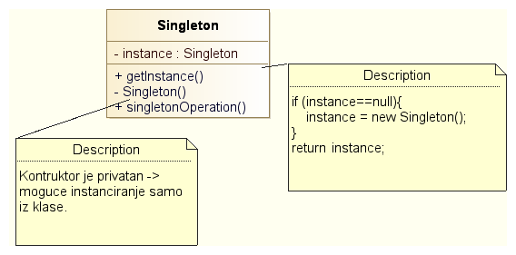